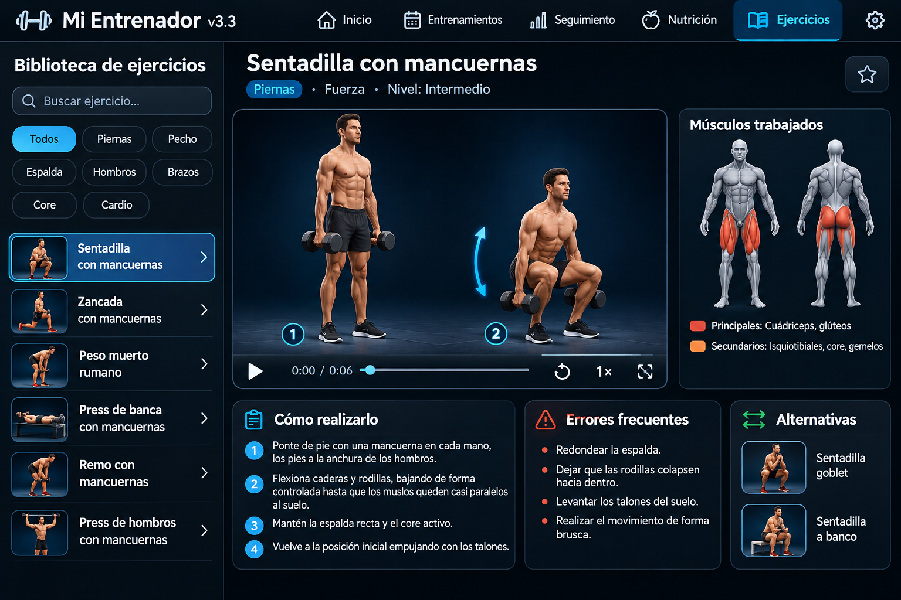

PROTOTIPO VISUAL · VERSIÓN 3.3
Mi Entrenador · Biblioteca profesional
Propuesta de diseño para la futura biblioteca de ejercicios con modelo anatómico uniforme, indicaciones técnicas y controles de reproducción.

Estado del proyecto: diseño pendiente de implementación.
Esta pantalla es una imagen de referencia, no una aplicación interactiva. Los controles de vídeo no funcionan y aún no se han producido las animaciones 3D biomecánicamente verificadas.
La versión 3.2.1 sigue siendo la aplicación operativa. Este archivo no lee ni modifica los datos de entrenamiento.